library(sf)
library(tidyverse)
library(spatstat)
#load simulated datasets
load("point_patterns.RData")
set.seed(123)16 Point Pattern Analysis
Point Pattern Analysis (PPA) is a set of methods that can help us interpret the spatial distribution of events (represented as points) in a defined study area/region. The goal is to identify deviations from the null hypothesis (complete spatial randomness modeled by a homogeneous Poisson distribution) that can be related to mechanistic processes at the first-order and the second-order:
- A first-order process means the pattern of points is determined by external factors or a trend in the environment
- A second-order process means the pattern is determined by interaction (attraction or repulsion) between the points themselves
For this tutorial, we will use two different simulated datasets. You will need to download the simulated datasets from this link and put it in the folder that your tutorial is saved in.
To follow along with this tutorial, make a new .Rmd document. As you move through the tutorial add chunks, headers, and relevant text to your document.
16.1 Reading in Data
16.2 Analyzing Global Structure
16.2.1 Quadrat Analyis
Quadrat analysis is a count-based method used to assess the global structure of a spatial pattern. In this method, the study area is divided into a grid of equally-sized cells (quadrats), and the number of points falling into each cell is counted. The results are then compared to the outcome of a Poisson distribution (which we use to model CSR).
The number of quadrats is highly dependent on the size of the study region and the number of events.
A very simple rule of thumb for choosing the number of quadrats in a quadrat test is to ensure that each quadrat contains enough points for the chi-square approximation to be valid. At a minimum, each quadrat should have at least 5 observations. However, for patterns that show clear clustering, this might not be possible. In that case, you can use Monte Carlo estimation for more robust estimates. For example, for our sample_pattern_1 dataset, 16 quadrats is too few because many quadrats have 5 or fewer. However, even with 9 quadrats, there are low numbers (because this dataset likely shows clustering). Therefore, we might choose to continue with 9 quadrats but add a Monte Carlo estimation.
plot(sample_pattern_1)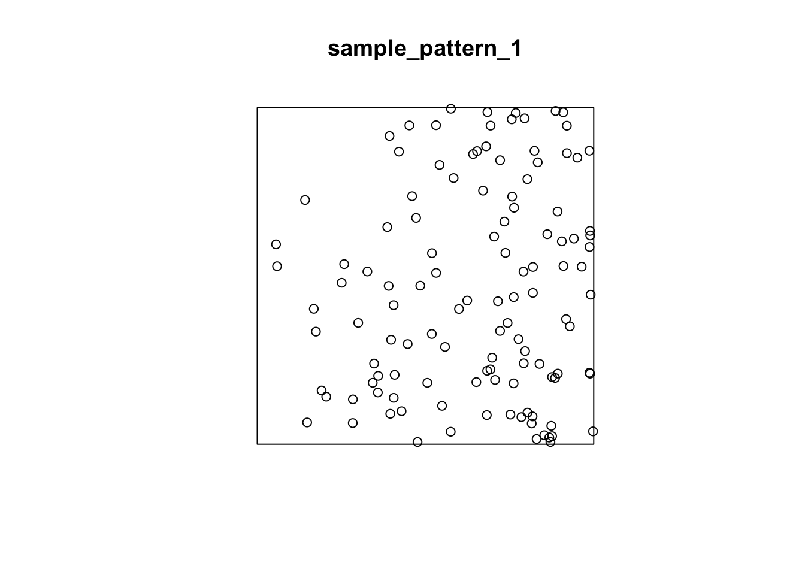
#create a quadrat count with 9 quadrats
q_count <- quadratcount(sample_pattern_1, nx = 3, ny = 3)
#plot counts
plot(q_count)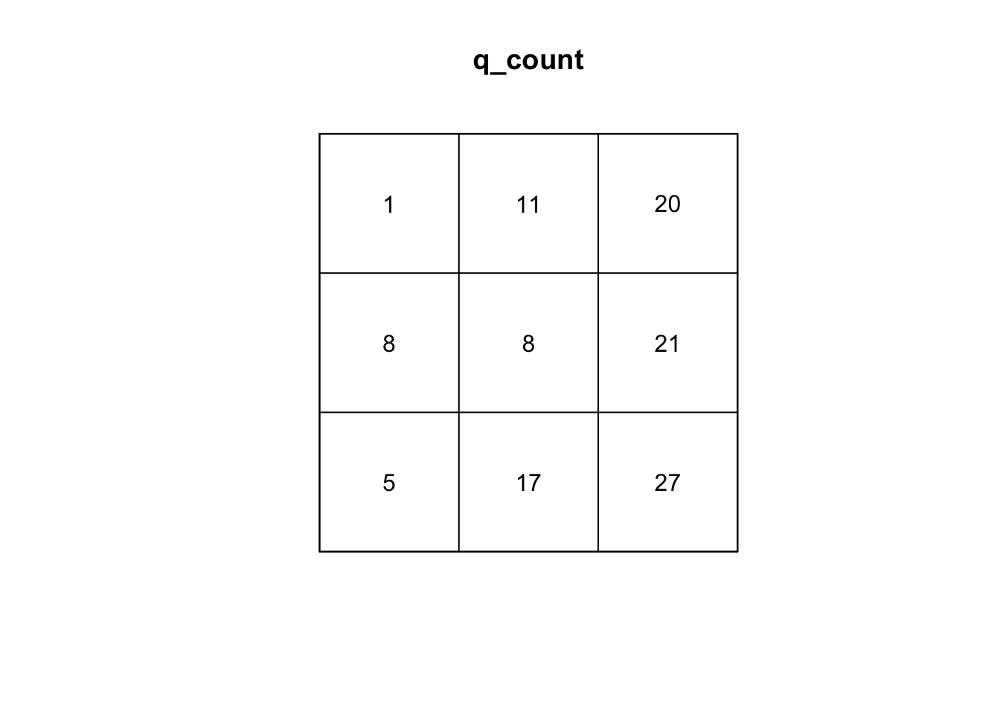
#calculate variance to mean ratio
var(as.vector(q_count)) /
mean(as.vector(q_count))[1] 5.595339#run q test with simulations
q_test <- quadrat.test(sample_pattern_1, nx=3, ny=3, method= "MonteCarlo", nsim=99)
#plot
q_test
Conditional Monte Carlo test of CSR using quadrat counts
Test statistic: Pearson X2 statistic
data: sample_pattern_1
X2 = 44.763, p-value = 0.02
alternative hypothesis: two.sided
Quadrats: 3 by 3 grid of tilesplot(q_test)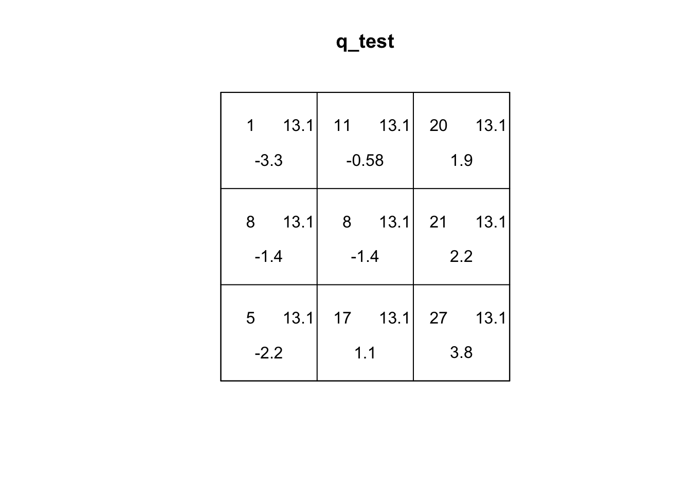
If you explore the plot of the quadrat test, the first number (top-left) is the number of events in the quadrat. The second number (top-right) is the expected number of events under CSR. The third number (bottom) is the residual, which is based on how different the top two values are. A larger residual indicates a larger difference.
Q2: Based on the residuals, which quadrats differ the most from expected values. What does this tell us about the spatial pattern?
For sample_pattern_1 our variance-to-mean ratio is 3.5, which indicates clustering. A Poisson (random) distribution has a variance-to-mean ratio of 1, meaning the variance equals the mean. Values greater than 1 indicate clustering, while values less than 1 indicate dispersion. The small p-value of the X2 quadrat test allows us to reject the null hypothesis of spatial randomness in favor of the alternative that the observed pattern is non-random and clustered.
plot(sample_pattern_2)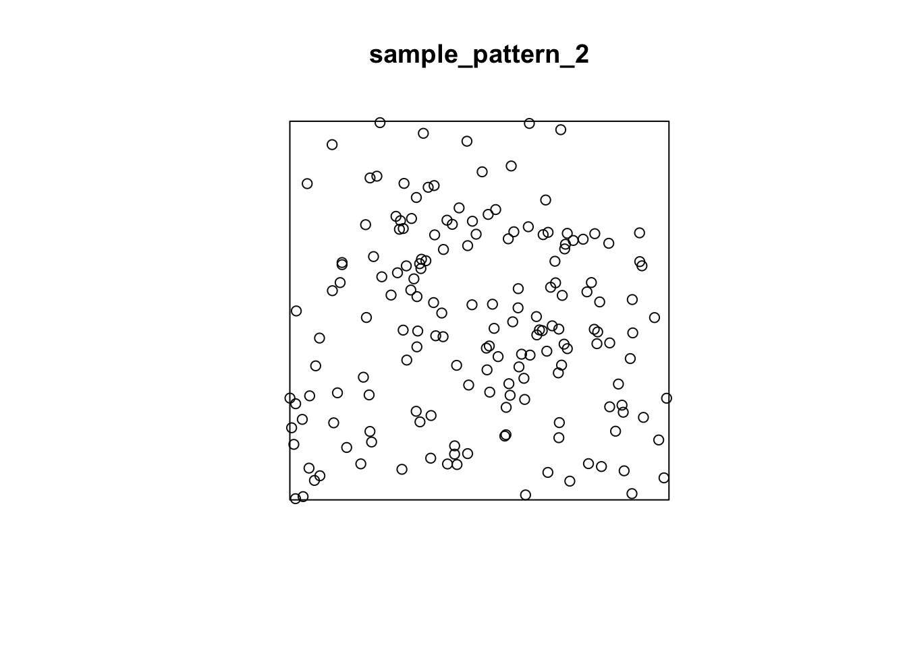
#create a quadrat count with 9 quadrats
q_count <- quadratcount(sample_pattern_2, nx = 3, ny = 3)
#plot counts
plot(q_count)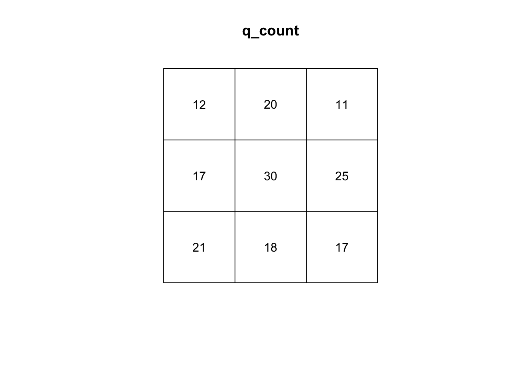
#calculate variance to mean ratio
var(as.vector(q_count)) /
mean(as.vector(q_count))[1] 1.868421#run q test with simulations
q_test <- quadrat.test(sample_pattern_2, nx=3, ny=3, method= "MonteCarlo", nsim=999)
#plot
q_test
Conditional Monte Carlo test of CSR using quadrat counts
Test statistic: Pearson X2 statistic
data: sample_pattern_2
X2 = 14.947, p-value = 0.122
alternative hypothesis: two.sided
Quadrats: 3 by 3 grid of tilesplot(q_test)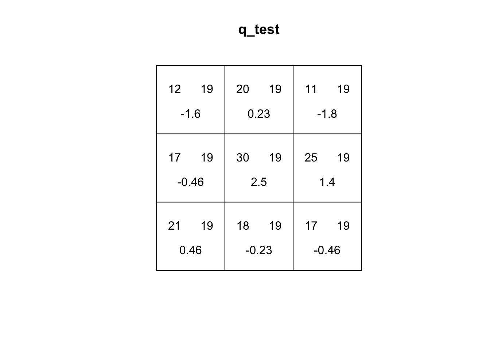
On the other hand, our quadrat test for sample_pattern_2 indicates that we fail to reject the null hypothesis of complete spatial randomness, suggesting the observed spatial pattern does not differ significantly from a random distribution.
16.2.2 Kernel Density
Kernel Density Estimation (KDE) is a simple way to create a smooth map of where points are most concentrated. Instead of dividing the study area into fixed quadrats and counting how many events fall in each one (like the quadrat test), KDE places an “influence curve” over every point in the dataset (kernel). When using a Guassian kernel, this curve is highest at the point itself and gradually taper off with distance. When all of these curves are added together, they form a continuous surface where high peaks show areas with many nearby points and lower areas show places with fewer points. Because KDE is only a descriptive smoothing technique, it does not involve a statistical model or a test of randomness like a quadrat test does. However, it can capture more local variability and is not sensitive to size/placement of the window of analysis like quadrat tests.In addition, KDE can be a useful input for accounting for intensity in second-order testing of spatial patterns.
The main parameter of the KDE is bandwidth. The bandwidth controls the width of each kernel. A large bandwidth (each point has broader influence) is better at capturing global variation and a small bandwidth is better at capturing local variation.
In R, the density() function defaults to a gaussian kernel with a nrd0 bandwidth selector, a variation of Silverman’s Rule of Thumb that uses the minimum of the standard deviation and the scaled interquartile range to determine smoothness.
We can create a kernel density estimation for our two patterns:
#create KDE
kernel_density1 <- density.ppp(sample_pattern_1)
#plot
plot(kernel_density1)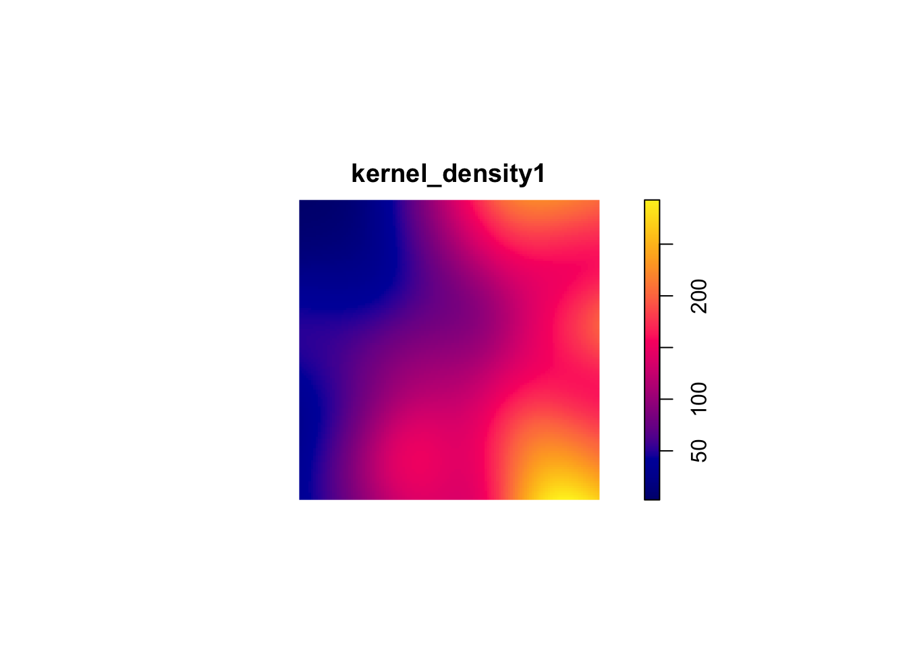
kernel_density2 <- density.ppp(sample_pattern_2)
#plot
plot(kernel_density2)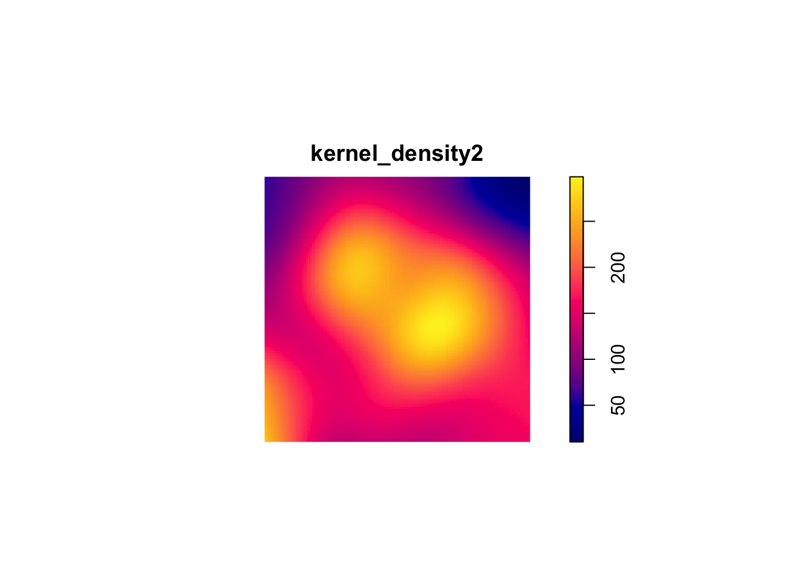
16.3 Analyzing Local Structure
16.3.1 Average Nearest Neighbor (ANN)
The ANN statistic is a distance-based method for summarizing local spatial structure in a point pattern. ANN is focused specifically on the distance of each point to its nearest neighbor. Therefore, ANN is useful for identifying very local clustering.
#compute observed ANN
ANN_obs1 <- mean(nndist(sample_pattern_1))
nsim <- 999
ANN_sim1 <- numeric(nsim)
#MC simulations
for(i in 1:nsim){
sim <- rpoispp(kernel_density1) #simulate inhomogeneous Poisson using our KDE
ANN_sim1[i] <- mean(nndist(sim))
}
#monte Carlo p-value (two-sided)
N_greater1 <- sum(ANN_sim1 >= ANN_obs1)
p_value1 <- 2 * min((N_greater1 + 1)/(nsim + 1), (nsim - N_greater1 + 1)/(nsim + 1))
p_value1[1] 0.966# 1f. Plot ANN null distribution
hist(ANN_sim1,
main = "Monte Carlo Distribution of ANN (sample_pattern_1)",
xlab = "Average Nearest Neighbor Distance")
abline(v = ANN_obs1, col="red", lwd=2)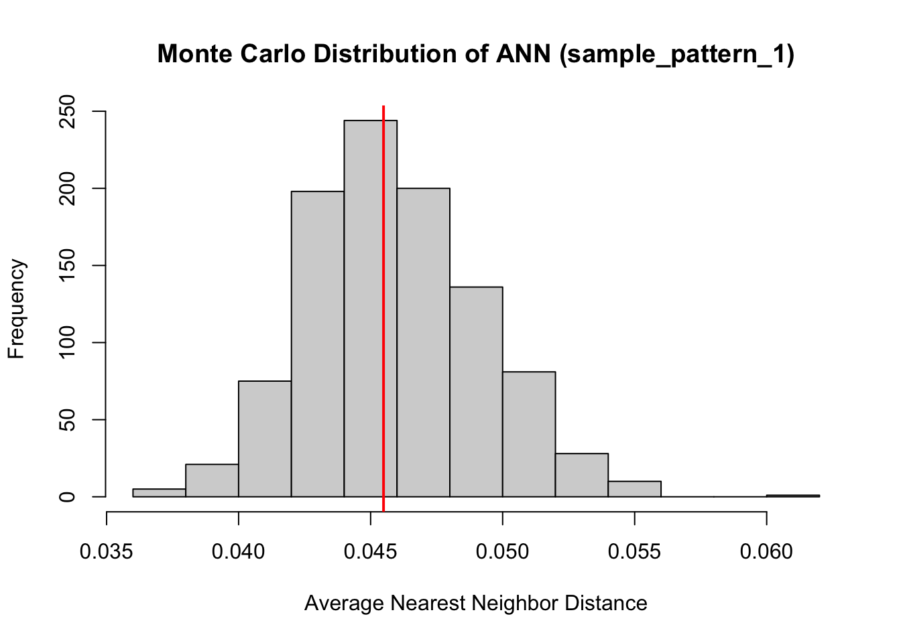
ANN_sim2 <- numeric(nsim)
#observed ANN
ANN_obs2 <- mean(nndist(sample_pattern_2))
#compute average intensity (lambda) for homogeneous Poisson
lambda2 <- sample_pattern_2$n / area.owin(sample_pattern_2$window)
for(i in 1:nsim){
sim <- rpoispp(lambda2, win = sample_pattern_2$window) # simulate CSR
ANN_sim2[i] <- mean(nndist(sim))
}
#monte Carlo p-value (two-sided)
N_greater2 <- sum(ANN_sim2 >= ANN_obs2)
p_value2 <- 2 * min((N_greater2 + 1)/(nsim + 1), (nsim - N_greater2 + 1)/(nsim + 1))
p_value2[1] 0.896#plot ANN null distribution
hist(ANN_sim2,
main = "Monte Carlo Distribution of ANN (sample_pattern_2)",
xlab = "Average Nearest Neighbor Distance")
abline(v = ANN_obs2, col="red", lwd=2)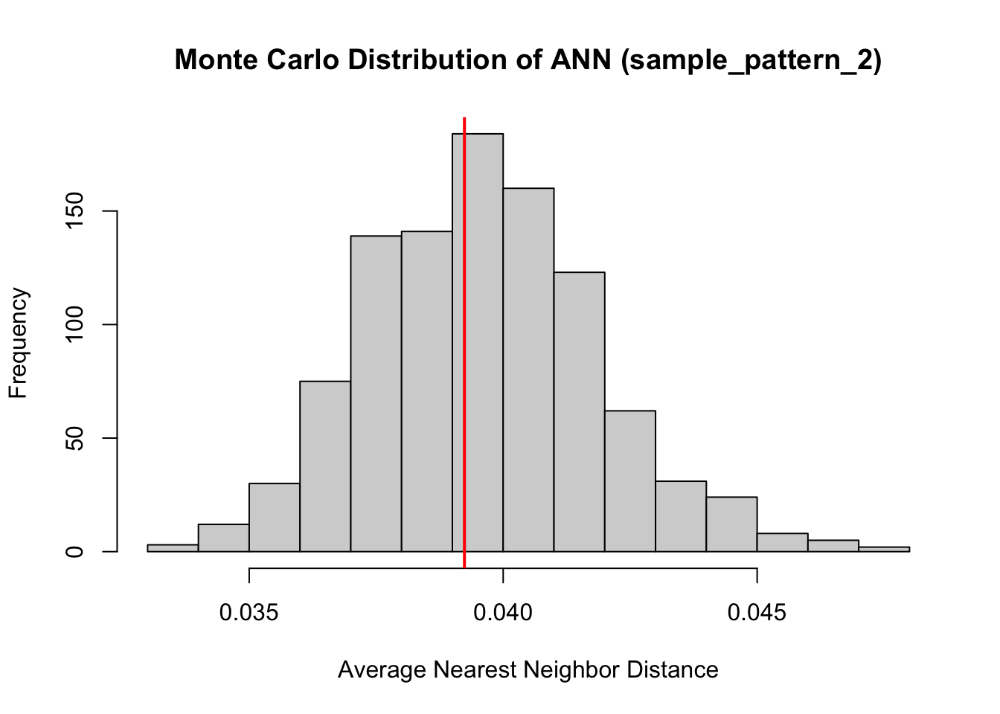
Both of our point patterns do not indicate deviation from the null process, meaning there is no evidence of significant local clustering or dispersion; consequently, the observed spatial arrangements are statistically indistinguishable from their respective Poisson processes.
16.3.2 L- Function
The L-Function is a transformation of Ripley’s K-Function used to diagnose local spatial structure by analyzing how a spatial point pattern deviates from randomness across different distance scales. It evaluates whether points tend to occur closer together or farther apart than would be expected if they were randomly distributed.
The L-function measures the number of neighboring points within increasing distances of each point and applies a transformation that makes deviations from randomness easier to interpret. To understand the results, the observed L-function is compared to the expected values from a reference model, typically a homogeneous Poisson process (Complete Spatial Randomness, CSR). If the data show large-scale variation in intensity, an inhomogeneous Poisson process is used instead so that underlying global structure is accounted for and the results can focus on local structure.
If observed values are greater than the expected values, the pattern indicates clustering at that distance; if they are smaller, the pattern suggests regular spacing or inhibition; and if they are similar, the pattern is consistent with randomness. Examining the L-function across distances allows researchers to identify the spatial scales at which clustering or dispersion occurs.
#first point pattern demonstrated global structure, therefore we use an inhomogenous Poisson as comparison. Correction corrects for edge effects.
l_funct_pattern1 <- envelope(
sample_pattern_1,
fun = Linhom, #inhomogenous
nsim = 99,
funargs = list(correction = "iso"),
transform = expression(. - r) # subtract r from obs and simulated
)Generating 99 simulations of CSR ...
1, 2, 3, 4, 5, 6, 7, 8, 9, 10, 11, 12, 13, 14, 15, 16, 17, 18, 19, 20,
21, 22, 23, 24, 25, 26, 27, 28, 29, 30, 31, 32, 33, 34, 35, 36, 37, 38, 39, 40,
41, 42, 43, 44, 45, 46, 47, 48, 49, 50, 51, 52, 53, 54, 55, 56, 57, 58, 59, 60,
61, 62, 63, 64, 65, 66, 67, 68, 69, 70, 71, 72, 73, 74, 75, 76, 77, 78, 79, 80,
81, 82, 83, 84, 85, 86, 87, 88, 89, 90, 91, 92, 93, 94, 95, 96, 97, 98,
99.
Done.#plot
plot(l_funct_pattern1, legend = FALSE)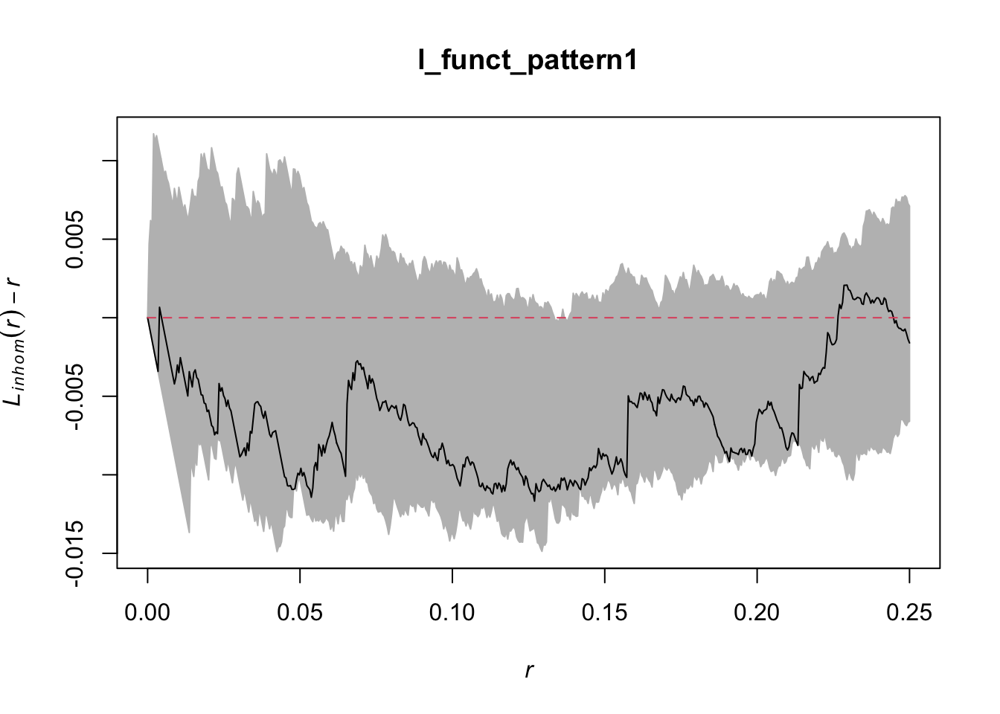
#use homogenous for pattern 2 since it demonstrated no global structure
l_funct_pattern2 <- envelope(
sample_pattern_2,
fun = Lest,#homogenous
nsim = 99,
funargs = list(correction = "iso"),
transform = expression(. - r) # subtract r from obs and simulated
)Generating 99 simulations of CSR ...
1, 2, 3, 4, 5, 6, 7, 8, 9, 10, 11, 12, 13, 14, 15, 16, 17, 18, 19, 20,
21, 22, 23, 24, 25, 26, 27, 28, 29, 30, 31, 32, 33, 34, 35, 36, 37, 38, 39, 40,
41, 42, 43, 44, 45, 46, 47, 48, 49, 50, 51, 52, 53, 54, 55, 56, 57, 58, 59, 60,
61, 62, 63, 64, 65, 66, 67, 68, 69, 70, 71, 72, 73, 74, 75, 76, 77, 78, 79, 80,
81, 82, 83, 84, 85, 86, 87, 88, 89, 90, 91, 92, 93, 94, 95, 96, 97, 98,
99.
Done.plot(l_funct_pattern2, legend = F)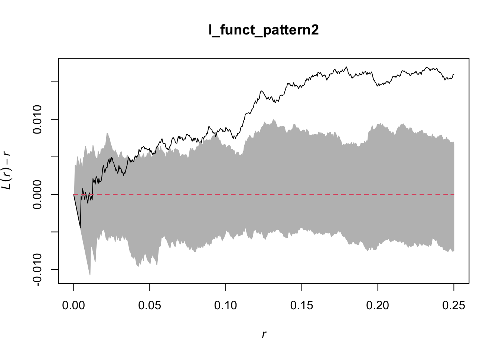
In these plots, the grey indicates the simulation envelope, the red line is CSR (or inhomogenous point pattern estimated from KDE) and the black line is the dataset value.
For the first pattern, the inhomogeneous L-function shows values close to zero across all distances, indicating that once the global variation in intensity is accounted for, the points are distributed roughly as expected under an inhomogeneous Poisson process. This suggests there is no significant local clustering or regularity beyond what is explained by the overall trend, so the observed spatial structure is largely due to the global inhomogeneity rather than local interactions between points.
For the second pattern, the centered L-function rises above zero for intermediate distances, approximately from 0.07 to 0.25 of the unit window. This positive deviation indicates that points are closer together than expected under a homogeneous Poisson process, revealing local clustering at that scale.